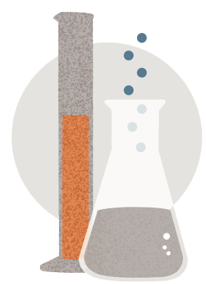

Production

Research and development
Limited Patient Population for Rare Diseases is Barrier to Development
SMA is diagnosed in approximately 1 in 10,000 newborns, resulting in an addressable patient population that is less than a fraction of a percent. The market size is made even smaller because Zolgensma is only applicable to newly diagnosed or “incident” cases, meaning children from birth to age 2. As a result, sales of Zolegnsma actually dropped by 15% from 2021 to 2022 as the drug has become applicable only to incident cases.10 Without government incentives for rare disease drug development, the economic case for investing in this type of research is challenging to make.
Research and development
Manufacturers Aim to be Profitable
In order to financially justify the tradeoff of research and development costs with the potential for revenue among a small patient base, manufacturers target high price points to achieve profitability and sustainability. As with many rare diseases, there is little competition among CGTs to treat a particular condition and prices can stagnate at high levels
Regulatory landscape
Accelerated Approvals Help Bring Treatments to Market
To address the treatment of illnesses that have a high unmet need, the FDA allows CGTs go through the Accelerated Approval Program.11 At the time of its approval, Zolgensma had just completed a small Phase 1 study consisting of only 15 patients. There is an ongoing Phase 3 trial with 21 patients, which focuses on two primary endpoints: the ability to sit without support for 30 seconds at 18 months and survival at 14 months.12 While the FDA determined the drug is promising enough to approve, the treatment hasn’t been on the market long enough to understand long-term outcomes, which has significant implications for the complex dynamics at play when parents, along with their providers and payers, are faced with the decision to pursue this treatment.
Government support
Orphan Drug Act is an Incentive for Manufacturers
So-called orphan drugs treat rare diseases. The Orphan Drug Act, signed in 1983, is designed to encourage research and development (R&D) by offering patent and financial incentives to manufacturers. By definition, a rare disease impacts fewer than 200,000 persons in the U.S. or affects more than 200,000 people but there is no reasonable expectation the cost of development will be recovered by potential sales.13 For these treatments, manufacturers get seven years of market exclusivity and tax credits of up to 50% of R&D costs. Since its passage, over 1,000 orphan drugs have made it to market.14
Commercialization

Pricing decision
Many Orphan Drug Prices Stay High for Years
Manufacturers of drugs for rare diseases target high price points to achieve profitability and sustainability. At minimum, these high prices can be sustained during the seven-year market exclusivity period, keeping these medications out of reach for some patients. Manufacturers will also monitor competitors’ efforts to bring new therapies to market for rare diseases, aiming to be the sole product in a given class. This contributes further to a lack of competition.15
Pricing decision
High Cost of Production and Delivery for Zolgensma
Since CGTs target a small population, production is often limited to a small number of plants.16 Zolgensma, for instance, is approved to be manufactured at only two locations. The method of producing an adeno-associated virus, the vector used to carry the corrective gene in Zolgensma and many other CGTs, typically results in low yields.17 Other requirements related to delivery and treatment, involving close coordination with patients, add to the complexity and, ultimately, the cost.18 Zolgensma has to be administered to a patient within 14 days of arrival at the site of administration.
Patient Access

Cost structure
Precision Financing is One Option
One-size-fits-all reimbursement models do not work for CGTs. The exceptionally high upfront costs, limited insight into long-term outcomes, and need for payers to remain financially solvent, mean that alternative payment models may be necessary to support the adoption of these life-changing therapies. Payers have expressed concerns about these therapies’ performance and whether manufacturers provided enough evidence of their efficacy to justify coverage and
reimbursement.19 Precision financing arrangements, specifically those that tie longer-term outcomes and performance to payment, may address many of these issues.20 However, they pose a number of potential challenges for all stakeholders, including patients. New thinking is required.